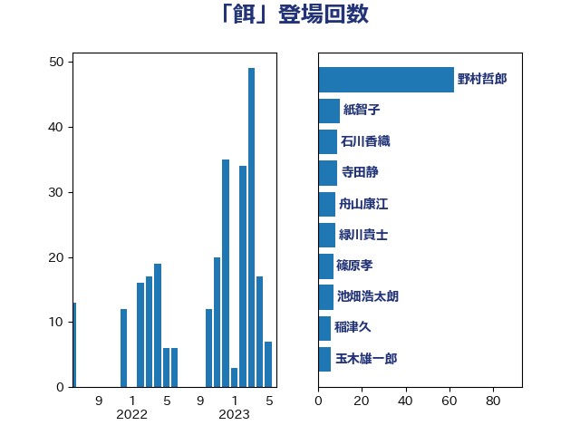

単語「餌」

| 野村哲郎 | 自由民主党 | 62 回 |
| 紙智子 | 日本共産党 | 10 回 |
| 石川香織 | 立憲民主党 | 9 回 |
| 寺田静 | 無所属 | 9 回 |
| 舟山康江 | 国民民主党 | 8 回 |
| 緑川貴士 | 立憲民主党 | 8 回 |
| 篠原孝 | 立憲民主党 | 7 回 |
| 池畑浩太朗 | 日本維新の会 | 7 回 |
| 稲津久 | 公明党 | 6 回 |
| 玉木雄一郎 | 国民民主党 | 6 回 |
| 須藤元気 | 無所属 | 5 回 |
| 庄子賢一 | 公明党 | 5 回 |
| 田名部匡代 | 立憲民主党 | 4 回 |
| 田中健 | 国民民主党 | 4 回 |
| 塩村あやか | 立憲民主党 | 4 回 |
| 高木かおり | 日本維新の会 | 3 回 |
| 金城泰邦 | 公明党 | 3 回 |
| 近藤和也 | 立憲民主党 | 3 回 |
| 葉梨康弘 | 自由民主党 | 3 回 |
| 高橋千鶴子 | 日本共産党 | 2 回 |
| 長友慎治 | 国民民主党 | 2 回 |
| 逢坂誠二 | 立憲民主党 | 2 回 |
| 西村明宏 | 自由民主党 | 2 回 |
| 藤木眞也 | 自由民主党 | 2 回 |
| 神田潤一 | 自由民主党 | 2 回 |
| 東国幹 | 自由民主党 | 2 回 |
| 徳永エリ | 立憲民主党 | 2 回 |
| 岩渕友 | 日本共産党 | 2 回 |
| 山本啓介 | 自由民主党 | 2 回 |
| 山口壯 | 自由民主党 | 2 回 |
| 串田誠一 | 日本維新の会 | 2 回 |
| 下野六太 | 公明党 | 2 回 |
| 高見康裕 | 自由民主党 | 1 回 |
| 青木愛 | 立憲民主党 | 1 回 |
| 青山繁晴 | 自由民主党 | 1 回 |
| 阿部司 | 日本維新の会 | 1 回 |
| 鈴木英敬 | 自由民主党 | 1 回 |
| 鈴木敦 | 国民民主党 | 1 回 |
| 野中厚 | 自由民主党 | 1 回 |
| 谷合正明 | 公明党 | 1 回 |
| 西田実仁 | 公明党 | 1 回 |
| 菅家一郎 | 自由民主党 | 1 回 |
| 若宮健嗣 | 自由民主党 | 1 回 |
| 空本誠喜 | 日本維新の会 | 1 回 |
| 石垣のりこ | 立憲民主党 | 1 回 |
| 田村まみ | 国民民主党 | 1 回 |
| 清水真人 | 自由民主党 | 1 回 |
| 泉健太 | 立憲民主党 | 1 回 |
| 池田佳隆 | 自由民主党 | 1 回 |
| 武部新 | 自由民主党 | 1 回 |
| 横沢高徳 | 立憲民主党 | 1 回 |
| 末次精一 | 立憲民主党 | 1 回 |
| 日下正喜 | 公明党 | 1 回 |
| 平山佐知子 | 無所属 | 1 回 |
| 山田勝彦 | 立憲民主党 | 1 回 |
| 山本順三 | 自由民主党 | 1 回 |
| 山本太郎 | れいわ新選組 | 1 回 |
| 山本剛正 | 日本維新の会 | 1 回 |
| 吉田宣弘 | 公明党 | 1 回 |
| 古賀千景 | 立憲民主党 | 1 回 |
| 加藤竜祥 | 自由民主党 | 1 回 |
| 中曽根康隆 | 自由民主党 | 1 回 |
| 中川郁子 | 自由民主党 | 1 回 |
| 世耕弘成 | 自由民主党 | 1 回 |
| おおつき紅葉 | 立憲民主党 | 1 回 |